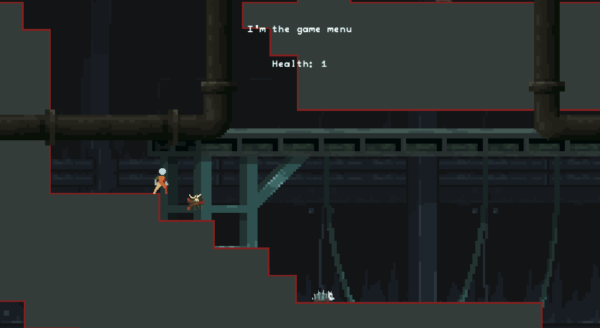
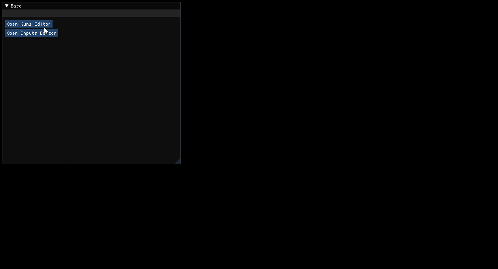

The Lost Hope
The Lost Hope
The Lost Hope is a 2D metroidvania-style game with a bloodborne-like vibe, and I originally started developing it using Monogame. At the time, I was super excited about the project, but it quickly became clear that building such a big game as a one-man team, especially with a custom engine on top of Monogame, was a bit of a stretch. Most of the development time was spent creating the engine itself, which slowed down progress on the actual game.
Despite that, I managed to get pretty far and created some interesting systems along the way. I had to hit pause on the project for a bit, but now I’m back at it with a renewed focus, and I’m working to make The Lost Hope even better! The goal is to take everything I learned from my first attempt and build on it, streamlining development, improving the gameplay, and polishing the engine. You can check out the first iteration of the project on github, but I currently don't plan on releasing the source code of current version of the game.
Gameplay
In terms of gameplay, here’s what I’ve managed to get so far:

Some key features I’ve implemented:
- Character Movement – This works for both the player and NPCs, including enemies.
- State Machine Controller – A shared implementation for all game entities that need state.
- LDtk Integration – Full integration with LDtk for level transitions.
- Main Mechanic – The unique mechanic where Ammo = Health.
- Enemy AI – Simple enemy AI for basic interactions.
- Interactions – The core interactions that drive the gameplay forward.
Engine
Lost Hope's engine has been built alongside the game itself. Some features include:
- Animation System – Using Aseprite and Monogame.Aseprite for smooth animations.
- Orthographic Camera – A simple yet effective camera system.
- Custom Input System – A fully custom pooled input system for better control.
- UI System – A custom-built UI system to handle all in-game interfaces.
- Content Manager – A custom content manager to handle assets efficiently.
- Pooling & Localization – For better performance and multi-language support.
- Scriptable Objects – Similar to Unity’s, but tailored to work seamlessly and edited during runtime.
Custom Editor
One of my favorite additions is the dedicated editor I created using Imgui. It allows me to edit scriptable objects using reflection, which makes managing game data a lot easier. Here's a quick look at it:

What's Next
Now that I’m back on the project, I’m focused on refining everything I’ve built so far, fixing up systems, and pushing the game further along. It’s exciting to revisit an old project with fresh ideas and new skills, and I can’t wait to see where The Lost Hope goes next!